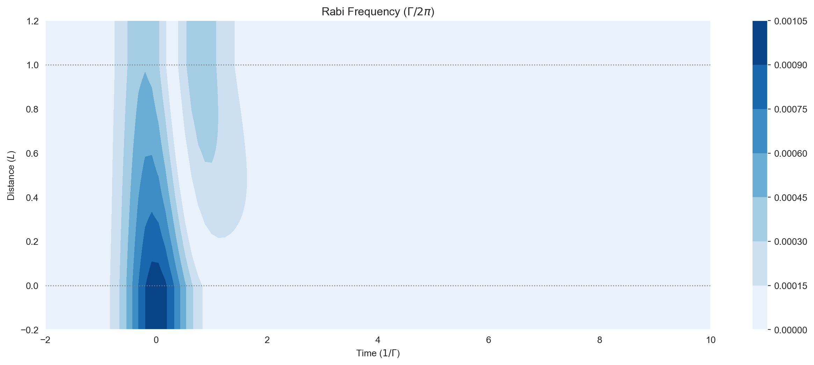
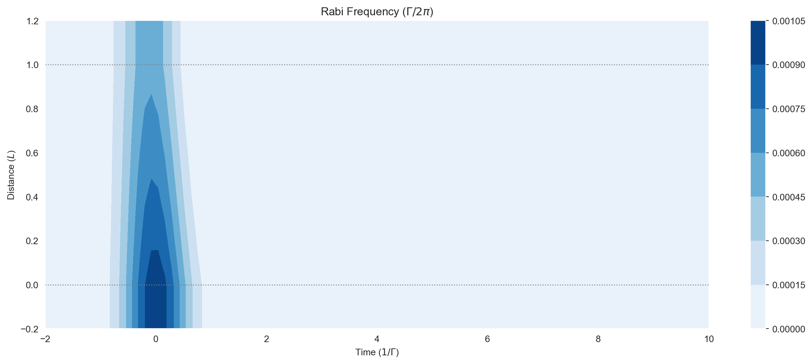
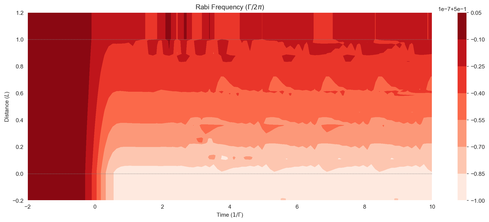
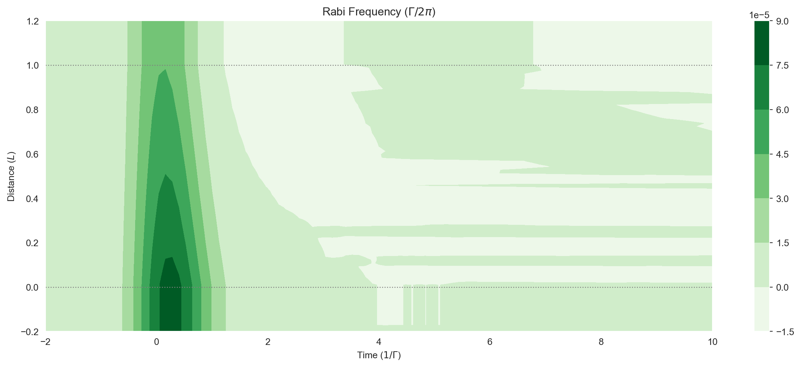

import numpy as npStructure and Angular Momentum
Adding Structure
So far we’ve looked at simple 2 and 3 level systems, but to accurately model a physical system we may need to consider complex structures. For example, the hyperfine structure of alkali metals used commonly in optical experiments. It is possible to define structure in clerq and provide strength factors for the field couplings and decays between pairs of sublevels.
We’ll take the example of a Rubidium 87 atom addressed with a weak field resonant with the \(5\mathrm{S}_{1/2} F=1 \rightarrow 5\mathrm{P}_{1/2} F=1\) transition. We can neglect the other upper level in the fine structure manifold, \(5\mathrm{P}_{1/2} F={2}\), as it is far from resonance. However, the decay to \(5\mathrm{S}_{1/2} F={2}\) should be considered.
If we start with the case of an isotropic field (with equal components in all three polarizations), we can neglect the substructure and just add the hyperfine levels, as the coupling how the population is distributed among the sublevels. For now, the relative strengths of the transitions are given in the following table
| F’=1 | F’=2 | |
|---|---|---|
| F=1 | \(\tfrac{1}{6}\) | \(\tfrac{5}{6}\) |
| F=2 | \(\tfrac{1}{2}\) | \(\tfrac{1}{2}\) |
and below (see Note on Strength Factors) we’ll see how these are computed.
We will index the three hyperfine levels we require as in the following table.
| idx | Hyperfine level |
|---|---|
| 0 | \(5\mathrm{S}_{1/2} F~=~1\) |
| 1 | \(5\mathrm{S}_{1/2} F~=~2\) |
| 2 | \(5\mathrm{P}_{1/2} F'~=~1\) |
How do we include those transition strengths in the system? Both the fields and decays have optional factors mapped to them for this purpose. For the decays, we have transitions \(\left|0\right> \rightarrow \left|2\right>\) and \(\left|1\right> \rightarrow \left|2\right>\). As per the table above, \(S_{11} = \tfrac{1}{6}\) and \(S_{21} = \tfrac{1}{2}\). Our factors for the isotropic field are then \(\sqrt{\tfrac{1}{3}\cdot\tfrac{1}{6}}\) and \(\sqrt{\tfrac{1}{3}\cdot\tfrac{1}{2}}\) respectively: the square roots of these strength factors multiplied by a third (as any given polarization of the field only interacts with one of the three components of the dipole moment.
print(np.sqrt(1 / 6 / 3))
print(np.sqrt(1 / 2 / 3))0.23570226039551584
0.408248290463863We’ll put those channels and their respective factors into the MBSolve object.
mb_solve_json = """
{
"atom": {
"decays": [
{
"rate": 1.0,
"channels": [[0,2], [1,2]],
"factors": [0.23570226039551587, 0.408248290463863]
}
],
"fields": [
{
"coupled_levels": [[0, 2]],
"factors": [0.23570226039551584],
"rabi_freq": 1e-3,
"rabi_freq_t_args": {
"ampl": 1.0,
"centre": 0.0,
"fwhm": 1.0
},
"rabi_freq_t_func": "gaussian"
}
],
"num_states": 3,
"initial_state": [0.5, 0.5, 0]
},
"t_min": -2.0,
"t_max": 10.0,
"t_steps": 100,
"z_min": -0.2,
"z_max": 1.2,
"z_steps": 100,
"z_steps_inner": 1,
"interaction_strengths": [
5.0e1
],
"savefile": "structure-1"
}
"""from clerq import mb_solve
mbs = mb_solve.MBSolve().from_json_str(mb_solve_json)Omegas_zt, states_zt = mbs.mbsolve(recalc=True)Saving MBSolve to structure-1.quOutput
import matplotlib.pyplot as plt
%matplotlib inline
import seaborn as sns
sns.set_style("dark")fig = plt.figure(1, figsize=(16, 6))
ax = fig.add_subplot(111)
# cmap_range = np.linspace(0.0, 1.0e-3, 11)
cf = ax.contourf(
mbs.tlist,
mbs.zlist,
np.abs(mbs.Omegas_zt[0] / (2 * np.pi)),
# cmap_range,
cmap=plt.cm.Blues,
)
ax.set_title(r"Rabi Frequency ($\Gamma / 2\pi $)")
ax.set_xlabel(r"Time ($1/\Gamma$)")
ax.set_ylabel("Distance ($L$)")
for y in [0.0, 1.0]:
ax.axhline(y, c="grey", lw=1.0, ls="dotted")
plt.colorbar(cf);
Hyperfine Structure for Single (Outer) Electron Atoms
In experiments with single outer electron atoms like Rubidium involving polarised (non-isotropic) light, we may need to consider the effect of hyperfine pumping mechanisms. Our state basis must then include the hyperfine structure and magnetic substructure of these fine structure manifolds, consisting of \(2F+1\) degenerate sublevels \(m_F=\{F,−F+1, . . . ,F−1,F\}\) within each hyperfine level.
The coupling of each pair of hyperfine sublevels is factored by the reduced dipole matrix element for that pair. This is not the place to go into how we calculate those reduced dipole matrix elements, see Ogden 2016, chapter 5 for details.
The good news is that clerq has helper functions in the hyperfine module to
- build the hyperfine structure for us, and
- calculate the reduced dipole matrix element factors.
First we can use the hyperfine module to create the hyperfine structure (\(F\) levels). As before we will model a weak field resonant with the \(5\mathrm{S}_{1/2} F=1 \rightarrow 5\mathrm{P}_{1/2} F=1\) transition. Again we can neglect the other upper level in the fine structure manifold, \(5\mathrm{P}_{1/2} F={2}\), as it is far from resonance, but the decay to \(5\mathrm{S}_{1/2} F={2}\) will be considered.
from clerq import hyperfine
# Init the two lower F levels
Rb87_5s12_F1 = hyperfine.LevelF(I=1.5, J=0.5, F=1, energy=0.0, mF_energies=[])
Rb87_5s12_F2 = hyperfine.LevelF(I=1.5, J=0.5, F=2, energy=0.0, mF_energies=[])
# Init the upper F level
Rb87_5p12_F1 = hyperfine.LevelF(I=1.5, J=0.5, F=1, energy=0.0, mF_energies=[])We can see looking at the lower \(F=1\) level that the hyperfine structure \(m_F=\{-1, 0 ,1\}\) is built automatically based on the angular moment numbers \(I\), \(J\) and \(F\).
print(Rb87_5s12_F1){
"F": 1,
"I": 1.5,
"J": 0.5,
"energy": 0.0,
"mF_levels": [
{
"energy": 0.0,
"mF": -1.0
},
{
"energy": 0.0,
"mF": 0.0
},
{
"energy": 0.0,
"mF": 1.0
}
]
}If there are levels to be addressed that are off resonance, we would need to add \(F\) level energies (e.g. if we included the \(F'=2\) upper level). Note that these only need to be relative to the resonance freq. If the mF levels are split (for example with a magnetic field), the individual mf level energies can be added relative to the \(F\) level energy.
We add the \(F\) levels to the atom structure object.
# Init the atom structure object and add the F levels
atom1e = hyperfine.Atom1e()
atom1e.add_F_level(Rb87_5s12_F1)
atom1e.add_F_level(Rb87_5s12_F2)
atom1e.add_F_level(Rb87_5p12_F1)We now have everything we need to build our MBSolve object. First, the total number of states:
NUM_STATES = atom1e.get_num_mF_levels()
print(NUM_STATES)11Energies and Detuning
Then the energies of these states, if they have been specified (no need in this case but here for completeness):
ENERGIES = atom1e.get_energies()
print(ENERGIES)[0.0, 0.0, 0.0, 0.0, 0.0, 0.0, 0.0, 0.0, 0.0, 0.0, 0.0]As for the solvers without structure, if desired we can specify a detuning:
# Tune to be on resonance with the F1 -> F1 transition
DETUNING = 0
print(DETUNING)0Now the levels to be coupled by the field are each F=1 to F’=1 combination pair. atom1e has a helper function for that (based on the order we added them above. F_level_idxs_a is for the lower level, F_level_idxs_b is for the upper):
Field Channels and Factors
FIELD_CHANNELS = atom1e.get_coupled_levels(F_level_idxs_a=[0], F_level_idxs_b=[2])
print(FIELD_CHANNELS)[[0, 8], [0, 9], [0, 10], [1, 8], [1, 9], [1, 10], [2, 8], [2, 9], [2, 10]]And now the important part, we need to calculate the Clebsch-Gordan coefficients that couple each \(M_F\) substructure pair. The atom1e class has a method to calculate these for us. We need to specify the polarisation of the light using \(q=\{-1, 0 ,1\}\). In this case we’ll choose \(q=1\).
q = 1 # Field polarisation
FIELD_FACTORS = atom1e.get_clebsch_hf_factors(
F_level_idxs_a=[0], F_level_idxs_b=[2], q=q
)
print(FIELD_FACTORS)[ 0. 0. 0. 0.28867513 -0. -0.
0. 0.28867513 0. ]Decay Channels and Factors
Similarly to the levels coupled by the field, we need to specify the pairs of levels that will be channels for spontaneous decay. This time the lower levels are all in both F=1 and F=2, so there are more combinations.
DECAY_CHANNELS = atom1e.get_coupled_levels(F_level_idxs_a=[0, 1], F_level_idxs_b=[2])
print(DECAY_CHANNELS)[[0, 8], [0, 9], [0, 10], [1, 8], [1, 9], [1, 10], [2, 8], [2, 9], [2, 10], [3, 8], [3, 9], [3, 10], [4, 8], [4, 9], [4, 10], [5, 8], [5, 9], [5, 10], [6, 8], [6, 9], [6, 10], [7, 8], [7, 9], [7, 10]]The spontaneous decay factors matching those channels (in order) can be obtained with the get_decay_factors method. This is equivalent to summing the get_clebsch_hf_factors_hf for all polarisations as decay photons are of all polarisations.
DECAY_FACTORS = atom1e.get_decay_factors(F_level_idxs_a=[0, 1], F_level_idxs_b=[2])
print(DECAY_FACTORS)[ 0.28867513 -0.28867513 0. 0.28867513 -0. -0.28867513
0. 0.28867513 -0.28867513 0.70710678 0. 0.
0.5 0.5 -0. 0.28867513 0.57735027 0.28867513
-0. 0.5 0.5 0. 0. 0.70710678]Initial State
In the two and three level models we didn’t specify an initial state for the system, which defaults to all population in the first (i.e. ground state). Here we need to correctly distribute the population in the ground state \(m_F\) levels, which should of course sum to one.
INITIAL_STATE = (
[0.5 / 3.0] * 3 # s12_F1b
+ [0.5 / 5.0] * 5 # s12_F2
+ [0.0] * 3
) # p12_F1
print(INITIAL_STATE)
print(sum(INITIAL_STATE))[0.16666666666666666, 0.16666666666666666, 0.16666666666666666, 0.1, 0.1, 0.1, 0.1, 0.1, 0.0, 0.0, 0.0]
1.0Putting it all into MBSolve
We now have everything we need to build the MBSolve object.
mb_solve_json = """
{{
"atom": {{
"decays": [
{{
"channels": {decay_channels},
"rate": 1.0,
"factors": {decay_factors}
}}
],
"energies": {energies},
"fields": [
{{
"coupled_levels": {field_channels},
"factors": {field_factors},
"detuning": {detuning},
"detuning_positive": true,
"label": "probe",
"rabi_freq": 1e-3,
"rabi_freq_t_args": {{
"ampl": 1.0,
"centre": 0.0,
"fwhm": 1.0
}},
"rabi_freq_t_func": "gaussian"
}}
],
"num_states": {num_states},
"initial_state": {initial_state}
}},
"t_min": -2.0,
"t_max": 10.0,
"t_steps": 100,
"z_min": -0.2,
"z_max": 1.2,
"z_steps": 100,
"z_steps_inner": 1,
"interaction_strengths": [
5.0e1
],
"savefile": "structure-2"
}}
""".format(
num_states=NUM_STATES,
energies=ENERGIES,
initial_state=INITIAL_STATE,
detuning=DETUNING,
field_channels=FIELD_CHANNELS,
field_factors=FIELD_FACTORS.tolist(),
decay_channels=DECAY_CHANNELS,
decay_factors=DECAY_FACTORS.tolist(),
)from clerq import mb_solve
mbs = mb_solve.MBSolve().from_json_str(mb_solve_json)Omegas_zt, states_zt = mbs.mbsolve(recalc=True)Saving MBSolve to structure-2.quOutput
We can output the field exactly as we would do for the two-level system.
import matplotlib.pyplot as plt
%matplotlib inline
import seaborn as sns
sns.set_style("dark")fig = plt.figure(1, figsize=(16, 6))
ax = fig.add_subplot(111)
# cmap_range = np.linspace(0.0, 1.0e-3, 11)
cf = ax.contourf(
mbs.tlist,
mbs.zlist,
np.abs(mbs.Omegas_zt[0] / (2 * np.pi)),
# cmap_range,
cmap=plt.cm.Blues,
)
ax.set_title(r"Rabi Frequency ($\Gamma / 2\pi $)")
ax.set_xlabel(r"Time ($1/\Gamma$)")
ax.set_ylabel("Distance ($L$)")
for y in [0.0, 1.0]:
ax.axhline(y, c="grey", lw=1.0, ls="dotted")
plt.colorbar(cf);
Plotting Populations and Coherences
If we want to get the populations in all the levels coupled by a field, we have a helper function mbs.populations_field. For example, if we want to look at the total population of all the upper sublevels coupled by the field:
fig = plt.figure(1, figsize=(16, 6))
ax = fig.add_subplot(111)
# cmap_range = np.linspace(0.0, 1.0e-3, 11)
cf = ax.contourf(
mbs.tlist,
mbs.zlist,
np.abs(mbs.populations_field(field_idx=0, upper=False)),
# cmap_range,
cmap=plt.cm.Reds,
)
ax.set_title(r"Rabi Frequency ($\Gamma / 2\pi $)")
ax.set_xlabel(r"Time ($1/\Gamma$)")
ax.set_ylabel("Distance ($L$)")
for y in [0.0, 1.0]:
ax.axhline(y, c="grey", lw=1.0, ls="dotted")
plt.colorbar(cf);
And for the sum of all the complex coherences on a field transition, we similarly have mbs.coherences_field:
fig = plt.figure(1, figsize=(16, 6))
ax = fig.add_subplot(111)
# cmap_range = np.linspace(0.0, 1.0e-3, 11)
cf = ax.contourf(
mbs.tlist,
mbs.zlist,
np.imag(mbs.coherences_field(field_idx=0)),
# cmap_range,
cmap=plt.cm.Greens,
)
ax.set_title(r"Rabi Frequency ($\Gamma / 2\pi $)")
ax.set_xlabel(r"Time ($1/\Gamma$)")
ax.set_ylabel("Distance ($L$)")
for y in [0.0, 1.0]:
ax.axhline(y, c="grey", lw=1.0, ls="dotted")
plt.colorbar(cf);
Note on Stength Factors
The strength factor gives the relative strength hyperfine transition. This is the sum \(S_{FF'}\) of the matrix elements from a single ground-state sublevel to the levels in a particular \(F'\) energy level, and the sum is independent of the ground state sublevel chosen. The sum of \(S_{FF'}\) over upper \(F'\) levels is \(1\).
s_11 = atom1e.get_strength_factor(F_level_idx_lower=0, F_level_idx_upper=2)
print(s_11)
s_12 = atom1e.get_strength_factor(F_level_idx_lower=1, F_level_idx_upper=2)
print(s_12)0.16666666666666657
0.4999999999999999So this is where the \(S_{11} = \tfrac{1}{6}\) and \(S_{21} = \tfrac{1}{2}\) factors came from.